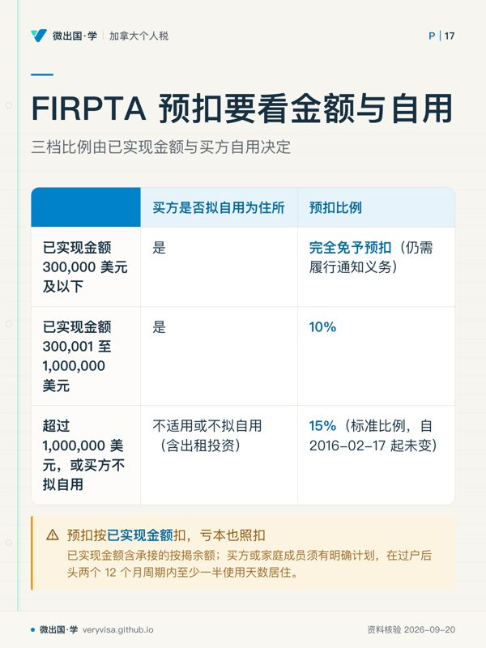
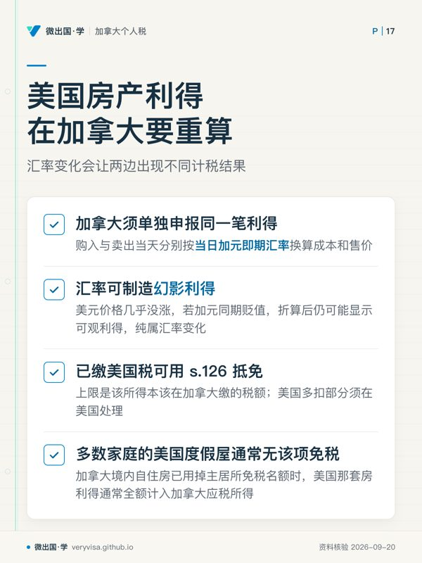

核实日期：2026-09-05｜本页现行口径＝2026 税年（2027 年春季申报）。 复核周期：FIRPTA 三档预扣与折旧年限属机制层，长期未变（按 2027-09-01 复核）；美国遗产税免税额与统一抵免每年可能随立法调整，随本页三列表一并更新。
这一页写给一类具体的人：在凤凰城或棕榈泉买度假屋、常年挂短租的加拿大家庭；在西雅图持有长期出租房的投资者；以及正在替父母或配偶处理美国房产身后事的遗产执行人。这三类人问的其实是同一件事在不同阶段的三个问法——「美国那边要扣多少、我要报哪张表、加拿大税单上怎么算」。答案分别落在出租时的 §871(d) 选举、卖出时的 FIRPTA 预扣、身故时的 Form 706-NA 三套机制上。读完你应该能做到三件事：判断美国房产在出租、卖出、身故三个节点分别触发哪套美国申报义务；说清加拿大这一侧同步要做什么（T776、资本利得、T1135、FTC）；找出三个节点间容易被忽略的连锁——出租期间的折旧会在卖出时把利得做大，卖出与身故是两套完全不同的美国税种。
✕
三道关卡各管各的，不能用一套逻辑套三次
§871(d) 净额选举、FIRPTA 预扣、联邦遗产税是三套互相独立的机制：做过净额选举不影响卖房预扣（IRS），卖房完税也不影响身故时房产仍要计入应税遗产。最常见的错误是处理好一关就以为另外两关也顺带解决了。
一、制度设计与底层逻辑：IRS 收不到不申报的人的税，所以把责任压给能抓到的人
1.1 谁与谁在博弈
非居民外侨（NRA）不在美国生活，IRS 事后追缴成本极高。三套机制解决的是同一个问题——在钱或产权离开美国监管范围之前先截住税款：出租收入靠扣缴人代扣；卖房款靠买方在过户环节代扣；遗产靠美国境内资产被留置，执行人不缴税拿不到清税放行。这与加拿大对非居民卖加拿大房产的思路相同——ITA s.116(5) 把代扣责任压给买方，与 FIRPTA 是镜像制度。
1.2 错报的法律后果
| 走错的那一步 | 后果 | 出处 |
|---|---|---|
| 出租收入从未选举净额待遇，也从未报 1040-NR | 常年被扣毛租金 30%，且超过 16 个月未申报会永久丧失当年扣除权 | IRS |
| 买方明知卖方是外国人却不预扣 | 买方自己要为该缴而未缴的税负连带责任，实务中买方律师因此一定会卡尾款 | IRS |
| 遗产执行人未在期限内申报 Form 706-NA | 逾期罚款按月累加；美国国税局可以对留在美国境内的房产本身留置，房产过户给继承人前解决不了 | IRS |
| 联名共有房产按「先默认只算一半」申报 | 生存配偶若不是美国公民，法定默认是全额计入死者遗产，少报会在稽核时被追差额与利息 | IRS |
| 出租多年从未申报，卖房时按原始成本算利得 | 基础必须先减去『已扣除或本可扣除』的折旧，卖房当年利得比想象的高，还可能触发追补的普通所得部分 | IRS |
⚠️
「我一直老老实实报税」不等于「三关都过了」
很多读者只处理了出租收入这一关（按时报 1040-NR、按 30% 被扣），就以为卖房和身故也一并妥善了。出租、卖出、身故是三套独立触发的义务，本页会逐一说明谁不能替代谁。
二、2026 税年现行规则与数字
2.1 第一关 · 出租：默认毛额 30%，还是主动选净额
美国出租房收入对非居民的默认待遇是 FDAP：按毛租金 30%（或协定税率）代扣，不许扣除任何费用（IRS）。非居民可主动依 §871(d) 选举，把收入当作有效关联所得（ECI）处理，扣除费用后按累进税率课税，税负通常远低于 30%（IRS）；选举一经作出持续有效，此后每年须报 1040-NR（逾期 16 个月丧失当年扣除权），自证表也要从 W-8BEN 换成 W-8ECI。完整流程见 us-intl-06-1040nr，本页只讲它与后两关的连锁。
折旧是强制的，不是可选的——这是它连到第二关的地方。美国住宅出租房折旧走 MACRS 一般折旧系统，按直线法、27.5 年回收期计算（替代系统 30 年），全国统一（IRS）。更关键的是：房产的调整后基础要按『已扣除或本可扣除（allowed or allowable）』的折旧减少，不是按实际申报过多少——一位从未做 §871(d) 选举、也从未申报过折旧的业主，卖房时仍要把这些年『本可扣除』的折旧从基础里减掉，利得比自己算的更高。
ℹ️
州税：华盛顿现在没有，亚利桑那与加州都有
华盛顿州目前没有个人所得税，但非永久状态（Washington State Department …）；亚利桑那与加州对本州出租收入都征独立州税，需另报州表（加州算法见 us-intl-06，California Franchise Tax Board）。本页不写死各州当年税率与门槛，申报前应直接核对当年现行页。
2.2 第二关 · 卖出：FIRPTA 按总售价预扣，三档比例不是同一个数
FIRPTA 要求买方在过户时，从已实现金额（总售价，含承接的按揭余额）中预扣税款，不问是赚是亏——亏本卖出照样被扣。多数人以为只有一个税率，实际是三档，判断标准是买方是否打算自用：
表一 · FIRPTA 预扣三档（判据是已实现金额与买方自用意图，机制自 2016-02-17 起未变）
| 已实现金额（总售价） | 买方拟自用为住所 | 预扣比例 | 状态 |
|---|---|---|---|
| $300,000 及以下 | 是 | 完全免予预扣（仍需履行通知义务） | 已生效，长期未变 |
| $300,001–$1,000,000 | 是 | 10% | 已生效，长期未变 |
| 超过 $1,000,000，或买方不拟自用（含出租投资性房产） | — | 15%（标准比例） | 已生效，自 2016-02-17 起未变 |
出处：IRS（1、2）。「买方自用」不是随口一说：买方或家庭成员须有明确计划，在过户后头两个 12 个月周期内至少一半使用天数居住在该房产（IRS）——卖给只打算短住、大部分时间出租的买方就够不上豁免或降档。
想把预扣降到接近实际税负，可在过户前提交 Form 8288-B 申请预扣证明书；买方用 Form 8288 申报解缴，Form 8288-A 是给卖方的完税凭证，供次年 1040-NR 核算最终税额。
✕
折旧追补会在这一步现形
一套持有十年、从未申报过折旧的出租房，卖出时的调整后基础仍要按 27.5 年直线法本该计提的折旧全额减去（二.1）。即使这些年一直按 FDAP 30% 预扣、从没享受过折旧抵税，卖房时依然吃到基础缩水、利得放大的后果——两头都没占到便宜。
加拿大这一侧要单独申报同一笔利得，且计税基础不是同一个数字：购入与卖出当天各按当日加元即期汇率折算成本与售价（CRA），汇率变动会制造加元计价的「幻影利得」——美元价格几乎没涨，若加元同期贬值，换算后可能显示出可观利得，纯属汇率变化。已缴美国税可按 s.126 申报外国税收抵免，但上限是这笔所得本该在加拿大缴的税额，美国那边多扣的部分要在美国那边（降档、及时退税）解决（加拿大联邦法规库）。
大多数持有美国度假屋的家庭，加拿大境内自住房早已用掉主居所免税名额，美国那套房通常没有主居所免税可用（细节见 ca-property-02-principal-residence-flipping），利得要全额计入加拿大应税所得。
2.3 第三关 · 身故：$60,000 门槛、9 个月期限、联名共有的陷阱
美国对非居民非公民（NRNC）课征的联邦遗产税，起点是一条容易被误读的申报门槛：位于美国境内的资产（含美国不动产）价值超过 $60,000，遗产执行人就必须申报 Form 706-NA（IRS），门槛不指数化，与美国公民适用的基础免税额相差极大。美国不动产永远算境内资产，不像银行存款或 portfolio interest 债券那样可能算境外资产（IRS）——一套凤凰城公寓哪怕只值几十万美元，也远超这个门槛。
表二 · 美国遗产税相关数字（影响加拿大居民持美国不动产者能否用条约按比例分到抵免额）
| 项目 | 2024 税年（考试口径） | 2025 税年 | 2026 税年现行 | 状态 |
|---|---|---|---|---|
| 非美籍非居民申报门槛（Form 706-NA） | $60,000 | $60,000 | $60,000（不指数化） | 已生效，长期未变 |
| 美国公民/居民基础免税额（Art. XXIX B 按比例分摊的分母来源） | 按 TCJA 日落叙事写，普遍预期 2026 年腰斩回约 $7,000,000 | $13,990,000 | $15,000,000（腰斩预期已撤销） | 已生效 |
出处：IRS（1、2）。申报期限是身故后 9 个月内，可用 Form 4768 申请自动延长 6 个月（IRS）。条约第 XXIX B 条允许加拿大居民按「美国资产 ÷ 全球资产」的比例分摊到一部分美国公民才有的统一抵免额，往往能把实际应纳税额降到很低甚至为零，但前提是按时申报 706-NA 并附 Form 8833——不申报就拿不到；完整算法见 xb-04-us-estate-tax-for-canadians，本页不重复。
✕
夫妻联名共有，先故一方身故时可能是全额计入而不是一半
很多加拿大夫妇把度假屋登记成联名共有，以为先故一方只占一半、只有一半价值计入美国应税遗产。「只算一半」的待遇（qualified joint interest）只在生存配偶是美国公民时自动适用；生存配偶不是美国公民（绝大多数加拿大夫妇属此类）时，法定默认是全额计入，除非能举证生存一方确实出资购买了该部分权益（IRS）。这条常在规划阶段就算错。
美国这一关只处理美国遗产税，不处理加拿大这一侧的所得税。加拿大的处理逻辑完全不同：ITA s.70(5) 把身故视为对全部资本财产的视同处置，计入逝者的终身申报，这是资本利得税，与美国遗产税是两个不同税种、按两套不同基础计算，理论上可能对同一笔增值各征一次税。协定第二十四条可在两边之间做部分抵免，但两套税基不是一一对应关系，实务中常有余额抵不掉的情形。
2.4 T1135：出租的要报，自用的不算
回到加拿大这一侧的合并申报义务。判断标准是用途，不是房产本身：长期出租、用来赚取收益的美国房产，只要成本额（不是市值）超过 $100,000，就落入 T1135 的「指定境外财产」范围（加拿大联邦法规库）；但个人自用财产被条文明文排除——只供度假、从不出租的公寓无论多值钱都不需要报（加拿大联邦法规库）。成本低于 $250,000 用简化的 Part A，达到 $250,000 起须用 Part B 逐项申报（CRA（1、2））。房产一旦从「自用」转为「出租」，从转变的那一年起要重新判断——完整展开见 ca-residency-04-t1135-foreign-property；一旦做了 §871(d) 选举正式经营出租，这套房产几乎肯定已不再是「个人自用」。
40
三、实务流程：三条时间线各自怎么走
3.1 出租：先判断值不值得选净额
估算毛租金与可扣除费用（利息、地税、维修、物业管理费、27.5 年折旧）的差额，判断净额课税是否明显低于毛租金 30%——多数有房贷或高折旧基础的出租房答案是肯定的。判断后在当年 1040-NR 上附声明做 §871(d) 选举，并把给扣缴人的表格从 W-8BEN 换成 W-8ECI；此后每年准时申报（逾期 16 个月丧失当年扣除权），逐年计提折旧。同时把美国房产收支折算成加元填入 T776，用美国缴税额申报 s.126 外国税收抵免，并检查成本是否超过 T1135 的 $100,000 门槛。
3.2 卖出：预扣证明书要在过户前申请
先估算已实现金额落在三档预扣区间的哪一档，以及买方是否符合自用条件。若预计实际应纳税额明显低于法定预扣比例乘以总售价（常见于持有多年、基础已因折旧大幅调低的交易），须在过户前提交 Form 8288-B 申请预扣证明书。过户当天买方按核定比例代扣并解缴（Form 8288），卖方拿到 Form 8288-A 作完税凭证；次年报 1040-NR，多退少补。同一笔利得再按加元成本基础与售价在 T1 附表 3 申报资本利得，用 s.126 申报外国税收抵免。
3.3 身故：执行人要先分清「美国这一关」与「加拿大那一关」
执行人清点逝者名下的美国境内资产（有美国不动产几乎必超 $60,000 门槛）；若房产联名共有且生存配偶非美国公民，按全额而非一半估算；在身故后 9 个月内申报 Form 706-NA（需要延期用 Form 4768），并评估主张条约第 XXIX B 条按比例抵免（附 Form 8833，完整算法见 xb-04）。同步处理加拿大终身申报：按 ITA s.70(5) 算视同处置资本利得，核对协定第二十四条能否用美国已缴遗产税做部分抵免。

四、联邦之外：卑诗省怎么走，加美两边的镜像表格
卑诗省没有遗产税，省一侧相关的是遗产认证费（probate fee）——省级收费，计费基础是经由 BC 遗产认证转移的财产（King's Printer, British Colu…）。美国不动产通常要在房产所在州另走一次辅助遗产认证（ancillary probate）才能过户，其价值一般不计入 BC 认证费基础——但执行人要面对两套独立的认证程序，成本往往更高。
加美两边的镜像表格清单：
| 场景 | 加方 | 美方 |
|---|---|---|
| 非居民卖出不动产，责任压给谁 | ITA s.116：买方代扣毛售价 25%，除非拿到清税证明 | FIRPTA：买方代扣已实现金额的 15%（或降档 10%/免） |
| 出租收入的境外申报 | T1135（出租的算，自用的不算） | 无对应的『境外资产』申报，出租收入本身走 1040-NR |
| 身故时的资本利得处理 | ITA s.70(5) 视同处置，计入终身申报的所得税 | 无所得税事件（除非之后由继承人再卖出）；改征联邦遗产税 |
| 身故申报表 | 终身申报（T1）+ 遗产 T3（如适用） | Form 706-NA（$60,000 门槛，9 个月期限） |
| 折算原则 | 逐笔按发生当日即期汇率（行政通融下可用近似平均汇率） | 以美元为唯一计价单位，不涉及折算 |
ℹ️
加拿大按「所得税」思路处理身故，美国按「遗产税」思路处理身故——两套完全不同的税种
加拿大那一刻交的是逝者本人的所得税（视同处置的资本利得，算在终身申报里）；美国那一刻交的是遗产本身的遗产税（按遗产净值课税，与继承人是谁无关）。税基、纳税义务人、算法全不同，只是恰好都在身故这个时点触发。
五、历史变革：从「查不到就收不到」到三层截堵机制
FIRPTA 立法于 1980 年，此前非居民卖完美国房拿钱离境，IRS 缺乏域外执行手段。1980 年立法把责任压给买方（境内、可执行），从此纳入强制预扣体系；预扣比例经历过调整（2016-02-17 起从 10% 上调到 15%），同时保留了 $300,000/$1,000,000 两档面向自用买家的优惠，避免拖慢普通家庭购房的过户流程。§871(d) 的净额选举机制更早，体现的是另一层考量：愿意像美国经营者一样逐年报税、接受累进税率与稽核，就能换取按净额课税——默认从紧、选择从松。
遗产税方面，非居民非公民的 $60,000 门槛历史悠久且从未指数化，与美国公民基础免税额涨到 2026 年 $15,000,000形成鲜明对比——这是遗产税制度区分「本国人」与「非本国人」的设计，条约第 XXIX B 条的按比例分摊正是为缓解这种结构性落差而加入的救济条款。
折旧年限与 FIRPTA 三档结构这类机制性规则多年未变，真正年年不同的是挂在机制上的数字：遗产税免税额、州税门槛。机制稳定、参数漂移——与本课其他 xb 讲解页的规律一致。
六、案例
案例一 · 素里家庭在凤凰城的度假屋（人物与数字均为示例）
Chan 一家是加拿大公民，在凤凰城有一套自住度假屋，每年冬天住三个月，其余时间闲置从不出租——从未出租、属个人自用财产，无论房子值多少钱都不需要申报 T1135（加拿大联邦法规库）。三年后他们开始把房子挂短租平台，年毛租金 $54,000，可扣费用约 $34,000。从这一年起，房子不再是纯自用财产：默认按 FDAP 30% 预扣（吃税 $16,200），做了 §871(d) 选举改按净额（约 $20,000）课税后税负显著下降；同时成本原值 $310,000 早超 T1135 的 $100,000 门槛，从出租当年起要开始申报。常见错报：以为「以前没报过，现在也不用报」——用途一变，申报义务要重新判断。
案例二 · 温哥华投资者卖出西雅图出租房（人物与数字均为示例）
Priya 在西雅图持有一套出租房十二年，一直做 §871(d) 选举按净额报税，原始成本 $280,000，累计折旧约 $95,000，调整后基础降到 $185,000。她以 $520,000 卖出，超过 $300,000 门槛且买方不自用，按标准 15% 预扣 $78,000。实际应纳税利得是 $520,000 − $185,000 = $335,000（对应折旧部分可能按普通所得税率追补），预扣明显不够，报 1040-NR 时还要补税。加拿大这一侧：按购入与卖出当天各自的加元即期汇率折算成本与售价（这些年加元贬值放大了加元口径的利得），按 s.126 用已缴美国税申报外国税收抵免。常见错报：以为预扣的 15% 就是「最终税负」，卖完房不再报 1040-NR——预扣只是预付款，实际税负要靠结算，多退少补都可能。
案例三 · 棕榈泉夫妇联名共有房产，先生身故（人物与数字均为示例）
Robert 与 Linda 是加拿大公民，联名共有棕榈泉一套价值 $650,000 的度假屋，二十年前用两人共同储蓄购买。Robert 先身故。美国这一侧：Linda 不是美国公民，按默认规则 Robert 的应税遗产要计入房产全部 $650,000（不是想当然的一半），执行人须 9 个月内申报 Form 706-NA；理论上举证两人各出一半购房款可只计一半，但多数家庭当年没留存这类凭证，最终按全额申报。他们主张条约第 XXIX B 条按比例分摊统一抵免（附 Form 8833），实际应纳税额压到很低。加拿大这一侧：Robert 身故那一刻按 ITA s.70(5) 视同处置他名下那一半权益，计入终身申报，产生一笔与美国遗产税分属两个税种、各自独立计算的加拿大资本利得税。常见错报：只处理了美国那边的遗产税，误以为「搞定了就没事」，漏报了加拿大终身申报里的视同处置资本利得。
七、常见错报与自查清单
-
把度假屋短租当成不需要申报的自用财产。 识别：有挂牌或收租记录，却在 T1135 与 1040-NR 上都按「自用」处理。
-
以为 FIRPTA 预扣已经是最终税负。 识别：卖房后再没报过 1040-NR。预扣只是预付款，实际税负要靠次年结算。
-
联名共有先故时按「只算一半」申报，而生存配偶不是美国公民。 识别：申报文件写了一半，却没有购房出资的举证文件。默认是全额，减半需要举证。
-
卖房按原始购价算利得，忽略折旧对基础的强制扣减。 识别：基础等于购入价，没减去『已扣除或本可扣除』的折旧，哪怕从未实报过。
-
只处理美国那边的遗产税，漏了加拿大的视同处置资本利得。 识别：执行人只准备了 706-NA，加拿大终身申报里没有这套房产的利得计算。
-
把美国资产申报门槛与美国公民基础免税额搞混。 识别：出现「反正免税额有一千多万，我们家不用管」——非美籍非居民的门槛只有 $60,000。
-
默认所在州和华盛顿一样没有州税。 识别：在亚利桑那或加州有出租收入，却从没报过该州的非居民税表。
-
误以为 §871(d) 选举也降低了卖房时的 FIRPTA 预扣比例。 识别：两套机制互不影响，卖房该扣多少还是按已实现金额的三档判断。
术语双语表
| English | 中文 | 一句机制 |
|---|---|---|
| FIRPTA | 外国人处置美国不动产预扣制度 | 买方按已实现金额预扣 15%（或降档 10%/免），与实际盈亏无关 |
| amount realized | 已实现金额 | FIRPTA 与折旧基础共用口径，含现金与买方承接的按揭余额 |
| Form 8288 / 8288-A / 8288-B | 预扣申报表 / 完税凭证 / 证明书申请表 | 买方申报解缴、卖方凭证抵税、过户前申请降低预扣，三张表配套使用 |
| §871(d) election | 房产收入净额选举 | 把出租收入从 FDAP 毛额改为 ECI 净额累进待遇，一经选择持续有效 |
| FDAP income | 固定或可确定的年度或定期收入 | 按毛额课税、不许扣除费用，出租收入的默认待遇 |
| effectively connected income (ECI) | 有效关联所得 | 与美国经营活动有效关联的所得，按累进税率并可扣除费用 |
| Form W-8ECI | 有效关联所得豁免预扣声明表 | 做了 §871(d) 选举后交给扣缴人，替代 W-8BEN |
| MACRS / GDS 27.5 年 | 折旧法定框架 | 住宅出租房折旧走直线法、27.5 年回收期，全国统一 |
| depreciation allowed or allowable | 已扣除或本可扣除的折旧 | 不论是否实际申报过，卖房时基础都按这个金额减少 |
| Form 706-NA | 非居民非公民遗产税申报表 | 美国境内资产超 $60,000 须报，期限身故后 9 个月 |
| qualified joint interest | 合格联名权益 | 只算一半计入遗产，仅在生存配偶是美国公民时自动适用 |
| Article XXIX B | 加美协定第 XXIX B 条 | 允许加拿大居民按美国资产占全球资产比例分摊统一抵免额 |
| Form 8833 | 协定立场披露表 | 主张 Article XXIX B 按比例抵免时必须附 |
| T1135 | 境外收入验证声明表 | 出租用途的境外财产成本超 $100,000 须报，自用财产被排除 |
| deemed disposition | 视同处置 | ITA s.70(5)：身故时对全部资本财产视同按市值处置，计入终身申报 |
| foreign tax credit (FTC) | 外国税收抵免 | ITA s.126：已缴美国税可抵加拿大税，上限为该所得本该缴的税额 |
来源
- FIRPTA withholding：https://www.irs.gov/individuals/international-taxpayers/firpta-withholding （IRS）
- Instructions for Form 8288（$300,000/$1,000,000 门槛）：https://www.irs.gov/instructions/i8288 （IRS）
- Nonresident aliens — real property located in the U.S.：https://www.irs.gov/individuals/international-taxpayers/nonresident-aliens-real-property-located-in-the-us （IRS）
- FDAP income：https://www.irs.gov/individuals/international-taxpayers/fixed-determinable-annual-or-periodical-fdap-income （IRS）
- Publication 527：https://www.irs.gov/publications/p527 （IRS）
- Some nonresidents with U.S. assets must file estate tax returns：https://www.irs.gov/individuals/international-taxpayers/some-nonresidents-with-us-assets-must-file-estate-tax-returns （IRS）
- Instructions for Form 706-NA：https://www.irs.gov/instructions/i706na （IRS）
- 加美所得税协定原文：https://www.irs.gov/pub/irs-trty/canada.pdf （IRS（Treasury 条约文本））
- ITA s.233.3（T1135）：https://laws-lois.justice.gc.ca/eng/acts/I-3.3/section-233.3.html （加拿大联邦法规库）
- Form T1135 Reporting Guide：https://www.canada.ca/en/revenue-agency/services/tax/international-non-residents/information-been-moved/foreign-reporting/form-t1135-reporting-2015-later-tax-years.html （CRA）
- Income Tax Folio S5-F4-C1：https://www.canada.ca/en/revenue-agency/services/tax/technical-information/income-tax/income-tax-folios-index/series-5-international-residency/series-5-international-residency-folio-4-foreign-currency/income-tax-folio-s5-f4-c1-income-tax-reporting-currency.html （CRA）
- ITA s.126（FTC）：https://laws-lois.justice.gc.ca/eng/acts/I-3.3/section-126.html （加拿大联邦法规库）
- BC Probate Fee Act：https://www.bclaws.gov.bc.ca/civix/document/id/complete/statreg/99004_01 （King's Printer, British Colu…）
本页知识卡
不看正文也能拿到这一节的核心内容：先看导读，再看图。点图放大，左右翻页。
- 先看先分清：什么都不做与主动申请，后果完全不同。
- 易漏折旧并非自选：住宅出租按 MACRS 直线法、27.5 年回收（替代系统 30 年）；基础按『已扣除或本可扣除』额减少，没申报也照算。
- 下一步看讲解；带历年报税与房产成本记录，请持牌专业人士评估是否需补救。

- 先看先找成交价区间，再核验受让方打算怎么使用房屋。
- 易漏过户前交 Form 8288-B；买方用 8288，卖方留 8288-A，次年报 1040-NR。
- 下一步去讲解核对成交结构；请持牌跨境税务师确认预扣与次年申报。

- 先看先找两边结果分叉的来源：交易日换汇，而非只盯美元涨跌。
- 易漏跨境抵免有天花板；源国多收的部分不能挪到另一边消化。
- 下一步看讲义；带买卖日汇率、成本和美国完税资料，请持牌专业人士复核 T1。